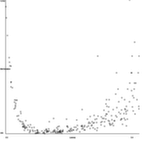
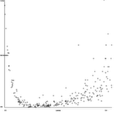

Steganography is the art of hiding information in images, cryptography is the practice of hiding information from adversaries. I was interested in creating an unbreakable and undetectable encryption so I began by looking into 1) how information was discerned from noise and 2) how codes were cracked.
Basically both of those problems are the same, Hidden information is found and codes are cracked by finding patterns. This can be got around by having no pattern, or at least having so many ways to encode each letter of the alphabet, each character is encoded in a unique hash. In this way, a long string of encoded Zs would not leave a repeating pattern which could be detected.
The information is encoded 16 bits of data, therefore 65536 different unique characters can be encoded, if we only want to encode 26 letters of the alphabet, spaces and some character to signify the end of the message, that leaves us with 2340 possible permutations per letter. The information is then hidden in the images in a 4x4 pixel grid pattern. Each pixel in the image is represented by an integer which can be odd or even, if you read even as 0 and odd as 1 you have binary information.
28 unique characters can be stored using only 5 bits of data, therefore the process of increasing the number of bits used to store each character could be seen as hashing. To convert a message into string of hashes, a neural network and backwards engineering is used. A random 16bit configuration is chosen, passed through the neural net and the if it is needed, the character it represents is inserted into the message, this process is repeated until each character in the message has a random 16 bit hash assigned. This makes decrypting the message easy, if you have the correct neural network, simply pass each hash through the network and voila, your secret message!
Of course, if you don't have the neural network, all you'll see is an image, and even if you know there is a message inside it, the chances of the message containing two identical 16 bit hashes is small. A message which is 3000 characters long would therefore look like it was written in a language which used 3000 letters in its alphabet. The network used to create the hashes is highly sensitive to even small tweaks to its structure, so much so that even a single node with an altered threshold will output gibberish that is impossible to replicate without the original parameters.
Try it yourself: Encrypt.jar
Source code (open source): Github
 

{kind=link}
{kind=link}
- Due to the nature of the encryption any form of image compression will destroy the hidden message therefore sending an image with a secret message over Facebook will not work.
- I'm not familiar with the industry standard methods for encrypting data and can take no responsibility for your secrets being exposed while using my encryption method.